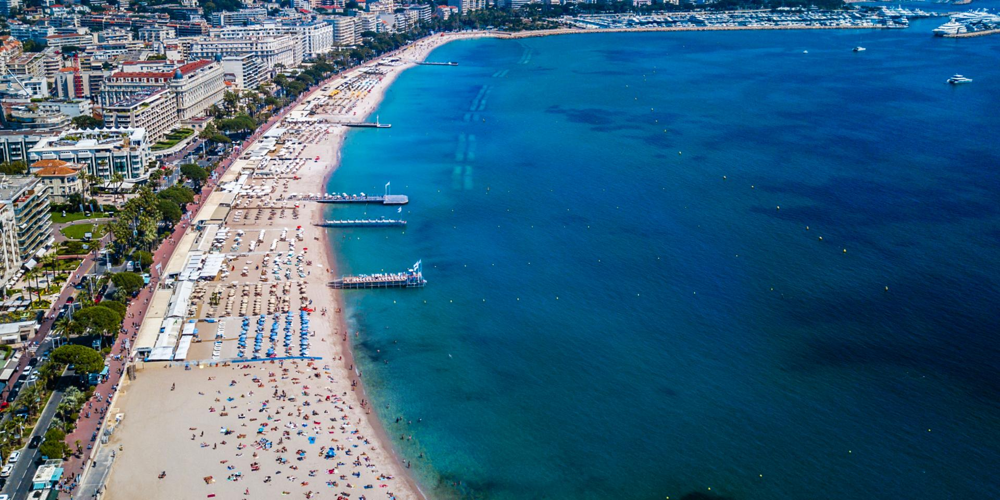
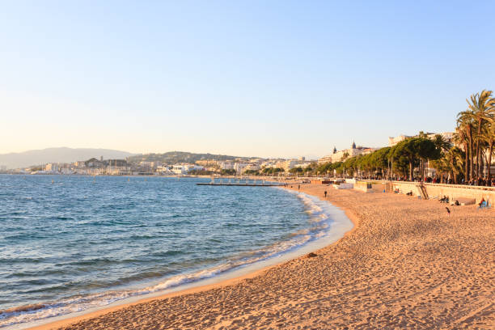
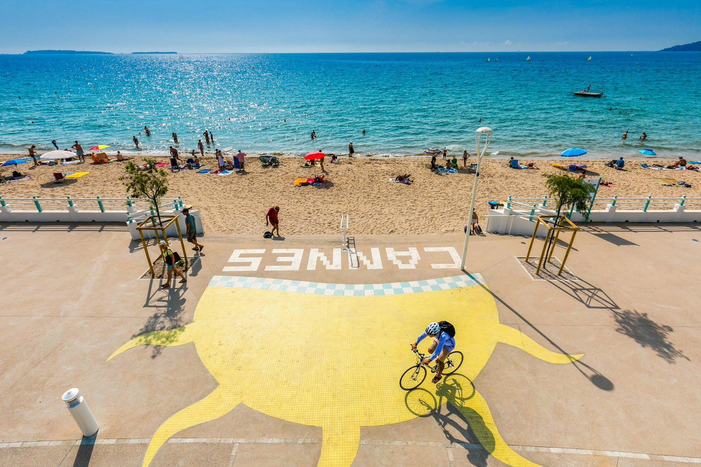
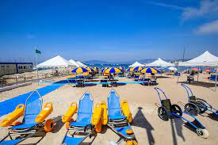

LES PLAGES
Vous pouvez retrouver toute les plages de Cannes
Plage de la Croisette
Nichées dans l'une des plus belles baies du monde,
plages invitent au confort et aux loisirs.
Elles longent la célèbre promenade de la Croisette,
entre le Palais des Festivals et le jardin de la Roseraie.
Pour la majorité privées et gérées par les hôtels,
elles disposent de restaurants pour un déjeuner les pieds dans le sable.
Pour les familles, nous conseillons la plage Zamenhof et la plage Macé, toutes deux publiques,
elles offrent un cadre idéal pour jouer ou apprendre à faire le papillon.
Plage Zamenhof

La plage tout en haut de la Croisette (partie Est) de Cannes se situe après l'hôtel Carlton et se
termine au niveau du Port Pierre Canto (zone opposée au centre-ville). L'hôtel Martinez est un
bon point de repère (central par rapport à cette plage). Cette plage de sable est gratuite à
l'extrémité. On a également une rampe d'accès pour les personnes à mobilité réduite. C'est l'une
des plages les plus recherchées de Cannes. On trouve plusieurs kiosques pour se restaurer.
Boulevard du midi

Les plages Boulevard du Midi se situent après le port de Cannes en allant vers Mandelieu la Napoule.
Ces plages publiques de sable s’étendent jusqu’aux plages de Cannes de la Bocca avec une magnifique vue sur l’Estérel.
Moins fréquentées que les plages de la Croisette, ces plages sont familiales et offrent une belle vue sur les îles de Lérins.
On trouve également des plages privées avec restaurants et un terrain de beach-volley.
Les plages sont situées en contrebas de la route où l'on trouve des snacks à intervalles réguliers.
Plage public en face du palais des Festivals

La plage du Palais des Festivals de Cannes se situe entre la Croisette, le côté du Palais des Festivals et le port.
C'est l'une des plus agréables plages de Cannes avec plus de 150 mètres de sable.
La pente douce est idéale pour la baignade avec des enfants.
La proximité du centre-ville est également très appréciable avec de nombreux commerces.
Rampe d'accès pour les personnes à mobilité réduite.
Plage Riviera Beach

C'est l'une des plages du midi les plus agréables pour passer un moment en famille ou entre amis.
Cette plage est idéale pour profiter de transats élégants et d’une ambiance balnéaire irrésistible.
Maitre-nageur. Des jeux de plage sont mis à disposition pour tous les petits.
Plage public Bocca Cabana
Totalement gratuites, avec douche à disposition, elles vous offrent la liberté de bronzer à la carte.
On y trouve plusieurs kiosques pour se restaurer.
Handiplage
Handiplage est ouvert du 15 juin au 15 septembre pour permettre aux personnes à mobilité réduite et en situation de handicap
de bénéficier des plaisirs de la mer et de se baigner en toute sécurité.